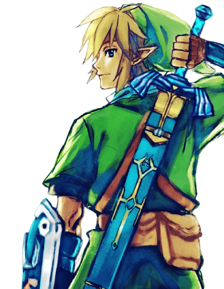

O que veremos nesse site?

Nesse site vou mostrar basicamente o que aprendi no semestre passado cursando dw1, usando de base um site que inclusive fiz em parceria com um amigo meu, Enzo Terra, no semestre anterior, vou desenvolvê-lo com algumas boas imagens para ilustrar bem os motivos de The Legend of Zelda ser tão bom, entre outros fatores sobre esse jogo.
Obviamente na parte escrito “Eu”, eu vou falar sobre uma receita de pão de batata, vou falar sobre mim é claro kkk e deixar o link para nosso outro site, então bora lá:
- Um breve resumo sobre essa obra de arte
- Por que Zelda é muito melhor que Free Fire?
- Trilha sonora abençoada
- Até seu avô jogou esse jogo
- Eu
- Entre em contato comigo